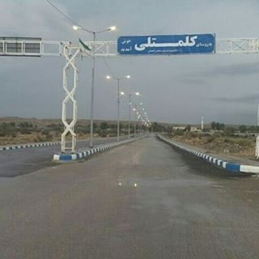

پل تاریخی لاتیدان
پلی باشکوه با طولی بیش از ۱ کیلومتر و ۲۳۳ دهانه، شاهکاری از معماری صفوی بر روی رودخانه کل که مسیر کاروانرو شیراز به بندرعباس را تسهیل میکرد.
کشف تاریخ و طبیعت بکر هرمزگان در قلب جنوب ایران؛ جایی که پل تاریخی لاتیدان با ۲۳۳ دهانه، هنوز شکوه صفویه را روایت میکند.
۰
سال قدمت (دوره صفویه)
۰
متر طول پل
۰
دهانه سنگی
۰
شماره ثبت ملی

ثبت ملی ایران
شماره ۲۰۰۵
روستای لاتیدان (همچنین با نام کلمتلی شناخته میشود) یکی از روستاهای باستانی و زیبای استان هرمزگان است که در دهستان گچین، بخش مرکزی شهرستان بندرعباس واقع شده است. این روستای تاریخی از شمال به کوه مهیب لاتیدان، از جنوب به پایگاه نیروی هوایی، از شرق به روستای گچین بالا، از غرب به رودخانه کل و از شمال شرقی به روستای دمیلو محدود میشود.
نام لاتیدان با طولانیترین پل تاریخی ایران گره خورده است؛ پلی از دوره صفویه با طولی بیش از یک کیلومتر و ۲۳۳ دهانه که بر روی رودخانه سیلابی کل ساخته شده و روزگاری مسیر کاروانرو شیراز به بندرعباس و شریان تجاری جنوب کشور را تسهیل میکرد. امروز این روستا با ترکیبی از تاریخ کهن، طبیعت دستنخورده و فرهنگ غنی جنوب، مقصدی ایدهآل برای گردشگران و علاقهمندان به میراث فرهنگی است.
موقعیت
هرمزگان
دوره
صفویه
لاتیدان با میراثی غنی از تاریخ و طبیعت، گنجینهای از جاذبههای بینظیر است
پلی باشکوه با طولی بیش از ۱ کیلومتر و ۲۳۳ دهانه، شاهکاری از معماری صفوی بر روی رودخانه کل که مسیر کاروانرو شیراز به بندرعباس را تسهیل میکرد.

رودخانهای سیلابی و پرآب که از غرب روستا میگذرد و مناظر طبیعی خیرهکنندهای را در فصول مختلف سال به نمایش میگذارد. این رودخانه حیاتبخش کشاورزی منطقه است.

کوهستانی مهیب در شمال روستا که با ارتفاعات صخرهای و پوشش گیاهی منحصربهفرد، چشماندازی بینظیر از دشت و روستاهای اطراف ارائه میدهد.

روستاهایی مانند آرابی، نیمهکار، گچین بالا و دمیلو در اطراف لاتیدان قرار دارند که هرکدام با فرهنگ و معماری سنتی خود، تجربهای اصیل از زندگی روستایی ارائه میدهند.
برای مشاهده هر تصویر در اندازه بزرگ، روی آن کلیک کنید
روایتی از پنج قرن تاریخ؛ از دوران صفوی تا مرمتهای امروز
پل لاتیدان در دوره صفویه بر مسیر کاروانرو لار–بندرعباس ساخته شد تا راه ارتباطی بندر با لارستان و داخل فلات ایران را هموار کند؛ مسیری که از روستاهای مُغ احمد، دشت سراهو، کاروانسرای جونگوی، آرابی و قلعه پارو میگذشت.
سیاحان و مورخان از این پل ساروجی به عنوان مهمترین سازه بازمانده از دوران شکوفایی مسیر تجاری جنوب یاد کردهاند؛ روایتهایی که نشان میدهد لاتیدان قرنها گذرگاه بازرگانان و مسافران بوده است.
پل لاتیدان با شماره ثبت ۲۰۰۵ به عنوان یکی از آثار ملی ایران به ثبت رسید و رسماً در زمره میراث ارزشمند کشور قرار گرفت.
بخشهای سالم پل در دو مرحله مرمت شد تا از تخریب بیشتر آن در برابر سیلابهای فصلی رودخانه کل جلوگیری شود.
با محوریت اداره کل میراث فرهنگی، گردشگری و صنایع دستی هرمزگان و مشارکت خیرین میراث فرهنگی، طرح مرمت و احیای این پل به عنوان نماد تاریخ و هویت منطقه دنبال میشود تا نسلهای آینده نیز شکوه آن را ببینند.
موقعیت پل تاریخی، روستا، کوه و رودخانه را روی نقشه ببینید و مسیر خود را برنامهریزی کنید
ترکیبی منحصربهفرد از زیباییهای طبیعی و میراث فرهنگی غنی
رودخانه سیلابی کل
آبراهه پرآب و حیاتبخش با مناظر فصلی متنوع
مناظر کوهستانی
ارتفاعات صخرهای با پوشش گیاهی منحصربهفرد
آب و هوای گرم و مرطوب
اقلیم خاص جنوب ایران با زمستانهای دلپذیر
تنوع زیستی
گونههای گیاهی و جانوری متنوع منطقه جنوب
معماری صفوی
پل ساروجی، نمونهای برجسته از پلسازی دوره صفویه
مسیر تجاری تاریخی
حلقهای از راه ارتباطی بندرعباس به لارستان
سنتهای محلی
فرهنگ غنی و آیینهای محلی مردم هرمزگان
صنایع دستی
هنرهای سنتی و دستبافتههای بومی منطقه
لاتیدان تلفیقی از معماری باستانی، طبیعت دستنخورده و مهماننوازی گرم مردم جنوب است. از عبور از پل تاریخی گرفته تا لذت بردن از غذاهای محلی، هر لحظه در این روستا خاطرهای ماندگار خواهد بود. بیایید و این گنجینه پنهان هرمزگان را کشف کنید.
پاسخ پرسشهای پرتکرار درباره سفر به لاتیدان
پل تاریخی لاتیدان در حدود ۵۰ تا ۸۰ کیلومتری غرب بندرعباس، بر روی رودخانه کل و در محدوده روستاهای لاتیدان، نیمهکار و آرابی قرار دارد. برای رسیدن به آن از جاده بندرعباس به سمت بندر خمیر و لار حرکت کنید.
«پل کول» نام محلی این پل است که از رودخانه کول (کل) گرفته شده؛ رودخانهای سیلابی که پل بر روی بستر عریض آن ساخته شده و در فصل بارندگی طغیانهای فصلی دارد.
از اواسط پاییز تا اوایل بهار بهترین زمان بازدید است، چون هوای جنوب ایران در این ماهها معتدل و دلپذیر است. در فصل بارندگی رودخانه کل پرآب میشود و مناظر تماشاییتری دارد.
بله، این پل در تاریخ یکم اردیبهشت ۱۳۷۷ با شماره ثبت ۲۰۰۵ به عنوان یکی از آثار ملی ایران به ثبت رسیده است.
علاوه بر پل تاریخی، میتوانید از کوه لاتیدان، رودخانه کل و روستاهای همجوار مانند گچین بالا، دمیلو، آرابی و نیمهکار دیدن کنید؛ روستاهایی که هرکدام جلوهای از زندگی اصیل و سنتی جنوب ایران هستند.